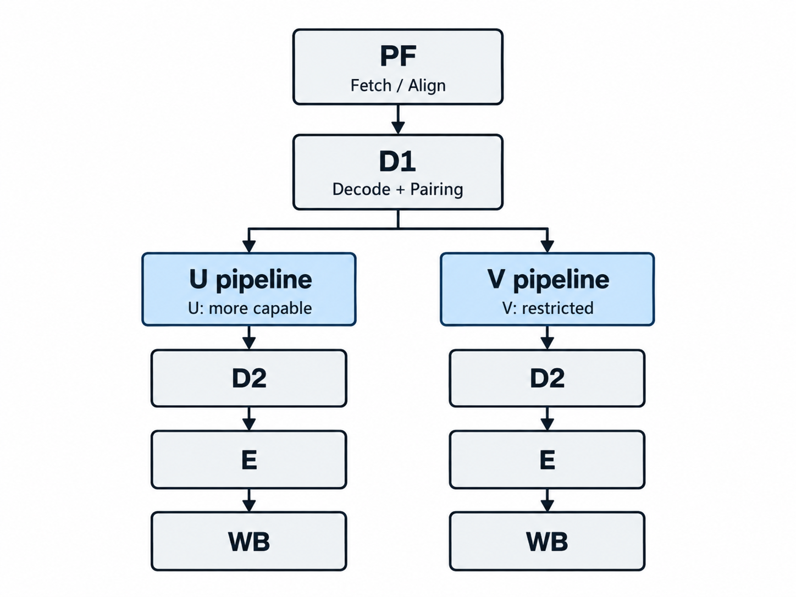
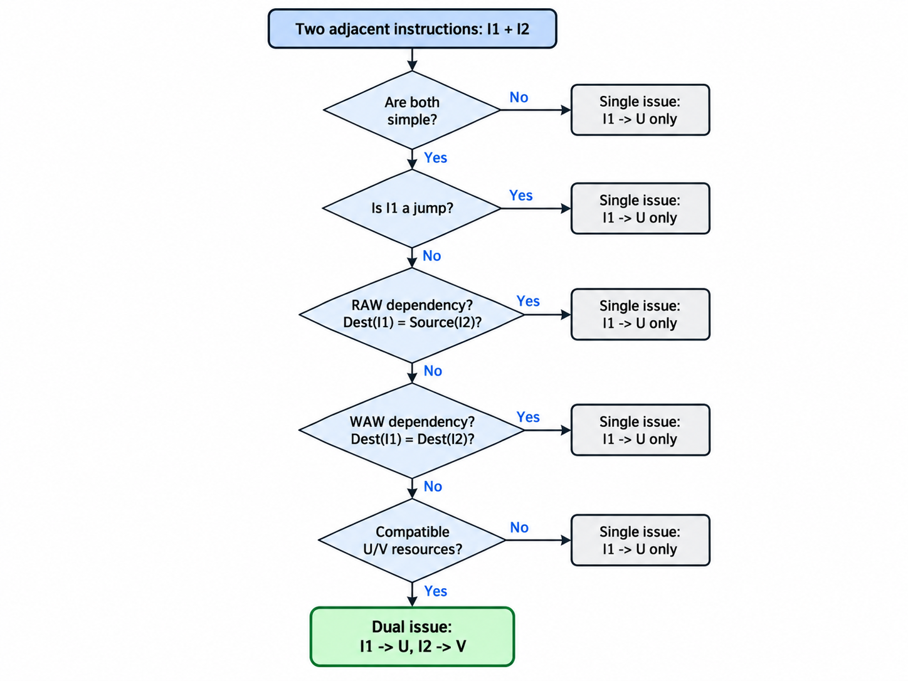
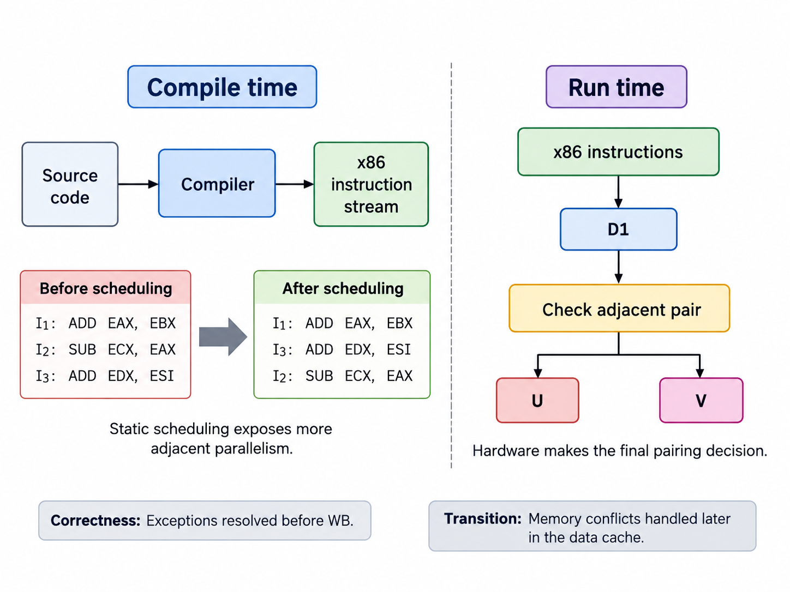

PF
Fetch & alignment
x86 instructions are variable-length, so the front end must fetch bytes, find instruction boundaries, and keep enough instruction bandwidth for a possible two-instruction issue.
UVA · CS Computer Architecture · Fall 2026
A technical dossier on how the original Pentium preserved the x86 programming model while increasing throughput with dual integer pipelines, dynamic branch prediction, split caches, and a pipelined floating-point unit.
Mingjia Shi · Jianyu Luo · Elton Jhang
Processor overview
The Pentium P5 is a 32-bit x86 processor that keeps the existing x86 architectural contract but substantially changes the internal implementation. Its central performance idea is to exploit instruction-level parallelism without using out-of-order execution.
Microarchitecture & front end
x86 instructions are variable-length, so the front end must fetch bytes, find instruction boundaries, and keep enough instruction bandwidth for a possible two-instruction issue.
D1 decodes two consecutive simple instructions and applies the pairing rules. If the pair is legal, I1 enters U and I2 enters V; otherwise I1 issues alone.
A 256-entry, four-way branch target buffer stores branch targets and history so the front end can fetch the predicted path before the branch is fully resolved.
ISA & register organization
Instruction boundaries are not fixed, so the front end must align and decode a variable number of bytes.
Simple instructions use hardwired control; more complex x86 instructions may require a microcode sequence.
Memory operands may require effective-address generation, so both integer pipelines need address-generation capability.
Existing x86 binaries must still run correctly even though the internal processor organization changed substantially.
Integer architectural register set
Both U and V pipelines operate on the same architectural register state. That shared state is why register dependencies directly constrain instruction pairing.
Pipeline & dual-issue execution


If any check fails, I1 issues to U and I2 waits. The paper reports that more than 90% of dynamically executed Integer SPEC instructions are simple, but “simple” alone is not enough to guarantee pairing.
ADD EAX, EBX
SUB ECX, EDXNo register dependency: the instructions can enter U and V together.
ADD EAX, EBX
SUB ECX, EAXI2 needs the new EAX produced by I1. Issuing them as independent operations could expose the wrong value.
SHL EAX, 1
SHL ECX, 1Even without a register dependency, V may lack the required functional unit. The barrel shifter is an example of a U-only resource.

Architectural correctness
Parallel internal execution must still present a precise architectural state to software.
An exception is precise when all instructions before the faulting instruction appear completed and later instructions have not modified visible architectural state. In the integer pipeline, exceptional conditions must be resolved before the instruction reaches WB, because write-back updates registers and flags.
Cache & memory system
Front end: fetch + branch target bandwidth
Back end: up to two data references from U/V
The address path (TLB + cache tags) is dual-ported, while the data array is single-ported and interleaved across eight banks. This provides most of the bandwidth of a dual-ported cache without paying the full SRAM area cost.
Memory consistency model
Cache organization answers “where is the data?”; the memory consistency model answers “in what order may memory operations become visible?”
The Pentium and Intel486 use a processor-ordered memory model but behave as strongly ordered processors under most circumstances. Reads and writes normally appear in program order on the system bus.
The important exception is that a read miss may pass buffered writes when those buffered writes are cache hits and are not directed to the same address as the read miss. I/O reads and writes remain in program order.
Keeps multiple cached copies of the same location consistent.
Defines which orderings of multiple loads and stores software may observe.
Relatively strong ordering, but not “all operations are always strictly serialized.”
Performance & limits
Simple instructions are common, but branches, register collisions, and resource restrictions reduce the fraction of adjacent pairs that can dual-issue.
Taken branches are common. Correct prediction can avoid a taken-branch delay; a misprediction flushes the wrong-path pipeline work.
A bank conflict delays V for one cycle. A cache miss can stop both in-order pipelines because later work cannot pass the miss.
SPEC92 comparison at 66 MHz core clock
The i486DX2-66 is the most useful same-core-frequency comparison, but the memory systems are not identical, so the result should not be attributed to dual issue alone.
≈ 2.0×
≈ 3.6×
Discussion
Why did Intel choose asymmetric U/V pipelines instead of duplicating two fully capable integer pipelines?
How much instruction-level parallelism is lost because an in-order P5 can pair only nearby instructions rather than searching a larger instruction window?
When does cache banking approximate true dual-port bandwidth well, and when do bank conflicts dominate?
Sources
The 1993 IEEE paper is the main source for the P5 microarchitecture and performance figures. Intel vendor manuals are used to supplement instruction-pairing details and the processor’s memory-ordering model.
Class presentation
The presentation covers the same architecture in a shorter lecture format.